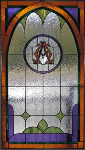

St Francis Church

Windows
by
St Francis Glass Company
Pat & Nancy Harmon, Instr
St Francis of Assisi
Descending Dove Rose Window
Cross Heart & Rose
This symbol was designed by Martin Luther and has become the primary symbol of the Lutheran Church. It incorporates the heart, the cross, and the rose. The five-pointed rose is also a symbol of the Virgin Mary.
The Lilies
Lilies, associated with Easter, symbolize the Resurrection of Christ and the reawakening of life. Also represents the Virgin Mary, mother of Christ.
Chi Rho
Chi Rho Monogram.
The first two letters of the Greek word for Christ, the Anointed, XPISTOS. Used by the Emperor Constantine on the shields and helmets of his army.
Alpha & Omega
Alpha and Omega, the beginning and the end of the Greek alphabet, symbolizes the completeness of the gospel, and the importance of Christ’s sacrifice.
Crown of Thorns
The Crown of Thorns and the nails from the cross are memorials to the sacrifice and agony of Christ on our behalf.
IHS
These are the first three letters of the Greek name for Jesus, IHSOYS, originally IHEOYE. Note also that the “S” contains fish shapes, another symbol for Christ.
The Cross and The Crown
These represent the death and the victory of Christ as He reconciles the world.
The Artists:
(Back, left to right)
Ken Rast
Ann Rast
Nancy Koon
Mike Koon
Nancy Harmon, Instr
Dan Hall
Pat Harmon Instr (Front)
LA Verde (not shown)

